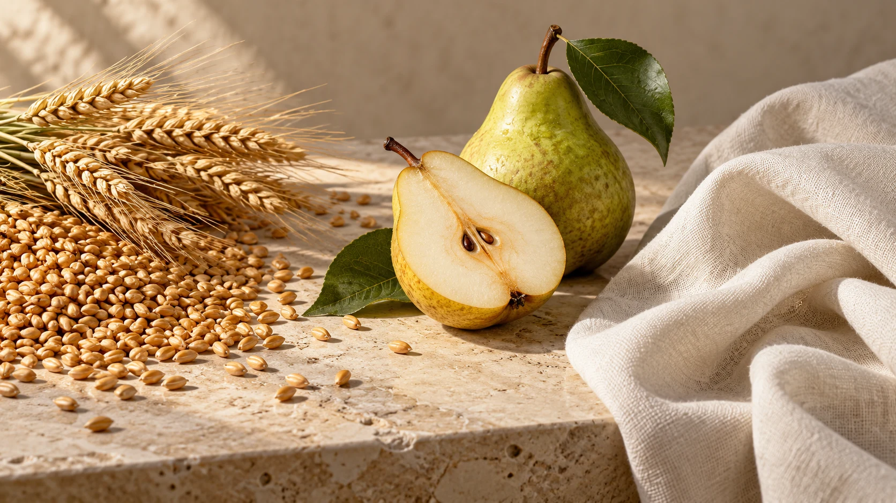

The substrate contains the target for the enzyme.
A biological way
to move forward.
Enzymes make specific changes to materials. Their value takes shape where that science meets a real need.
Explore how enzymes workNature works through
specific reactions.
Enzymes are biological catalysts. They speed up particular reactions involving a material called a substrate.
A protease acts on bonds within proteins. Pectin-degrading enzymes act on pectin in fruit tissue. Changing those molecules can change how a material behaves.
The enzyme catalyzes a specific molecular change.
Its relevance depends on the application.
Temperature, acidity, contact and time influence enzyme action.
The reaction is precise.
The relevance is familiar.

Nutrition
Phytase breaks down phytate in plant feed ingredients, helping release the phosphorus held within it.
Explore animal feedFruit processing
Treating pectin changes a component of fruit tissue. The timing of treatment matters for extraction and clarification.
Explore juice processingCleaning
Proteases act on proteins in stains. Formulators connect that function with the rest of the detergent system.
Explore detergentsProgress has to work
in the process.
A useful application starts with a clear purpose. Material use, process performance and product quality each give research a question to investigate.
Evaluating the enzyme under relevant conditions shows what it can contribute.
Material useProcess performanceProduct quality
Innovation follows
the whole connection.
Product development, production technology, application research and strain research inform one another. A question at one point can send the work back to another.
FunctionA specific enzyme action.
FormA preparation for handling and use.
PurposeA relevant industrial application.
Start with what the application needs.
Product form and enzyme function need to make sense together. Development connects the biological action with the way an enzyme preparation will be handled and used.
Explore this work- 01Fermentation
- 02Separation
- 03Concentration
- 04Formulation
Bring the science into production.
Fermentation, separation, concentration and formulation connect the biological source to an enzyme preparation. Production technology is part of that continuing work.
Explore this workThe material.The conditions.The intended result.
Ask the question where it matters.
Raw material, process stage and formulation conditions shape what needs to be evaluated. Application work keeps those practical questions connected to enzyme selection.
Explore this workMicroorganisms.The biological starting point.
Go back to the biological starting point.
Enzyme-producing microorganisms are a foundation for the work. Strain research sits alongside application research, connecting the source of an enzyme with its possible uses.
Explore this workA foundation
for further progress.
SUNSON brings strain and application research together with manufacturing. Two parts of that continuing work are worth a closer look.
The microorganisms
behind the enzyme.
Strain screening and development concern the biological source of enzymes. SUNSON’s collection of enzyme-producing microbial strains and gene-sequence submissions to GenBank support this research foundation.
Shared ways
to describe the work.
Participation in drafting Chinese national standards for classification, quality requirements and activity testing contributes to a common technical language for enzyme preparations.
One material.
Different opportunities.
Pectin is part of fruit tissue. The same broad biological target connects to different process tasks, depending on where treatment takes place.
Work with the fruit.
Treatment addresses the fruit material as juice is released.
Work with the juice.
Treatment addresses pectin remaining in the juice as part of clarification.
The fruit, process stage and desired result determine what needs to be evaluated.
Explore enzymes for juice processingBring the next
question into view.
Explore an application or share a process question with SUNSON. Each offers another way to connect science with useful change.
Find your applicationDiscuss a process question